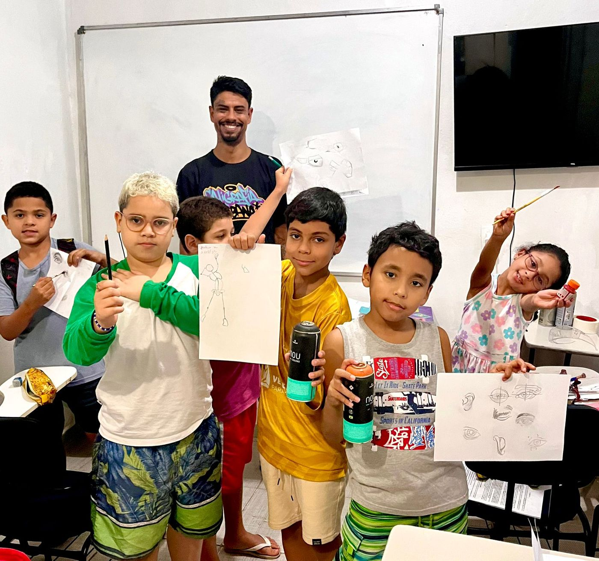
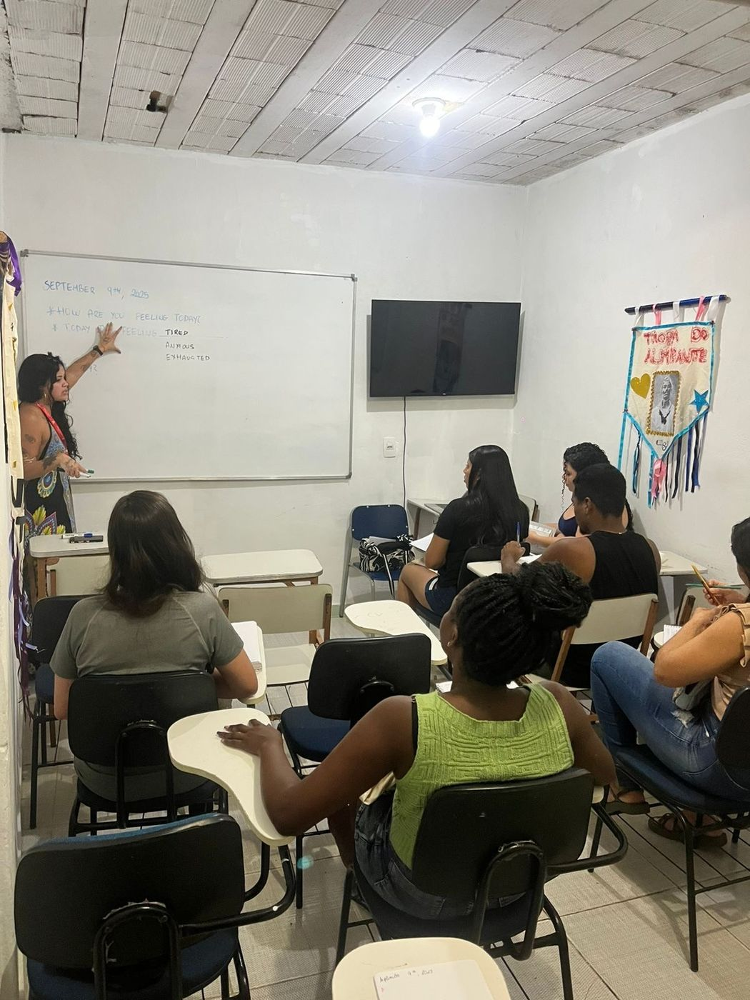
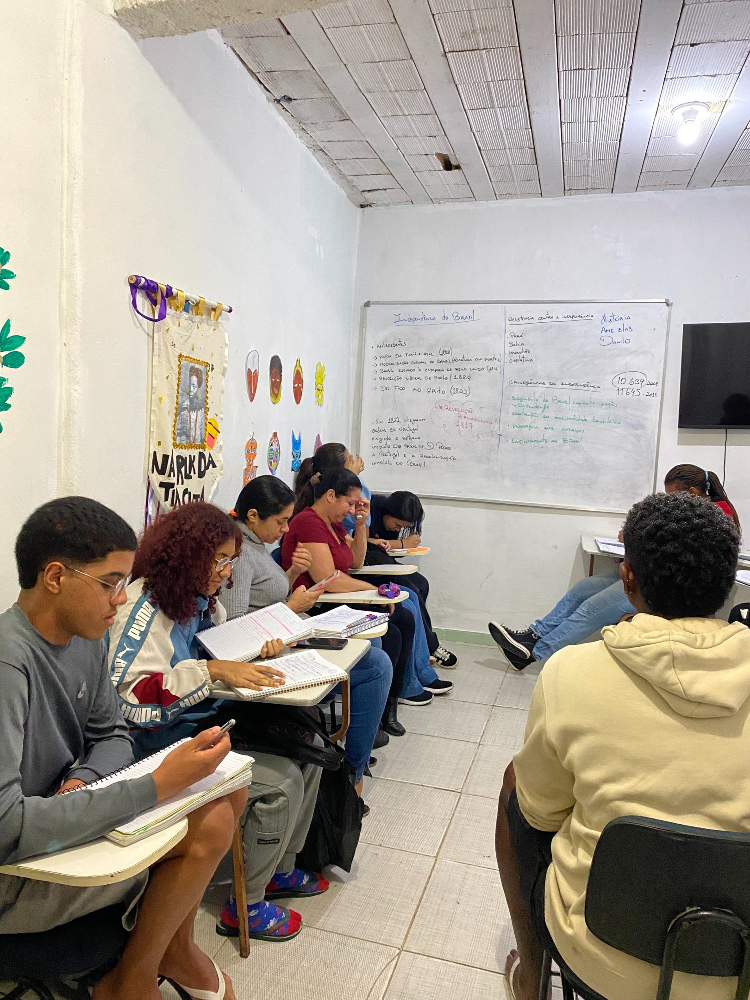
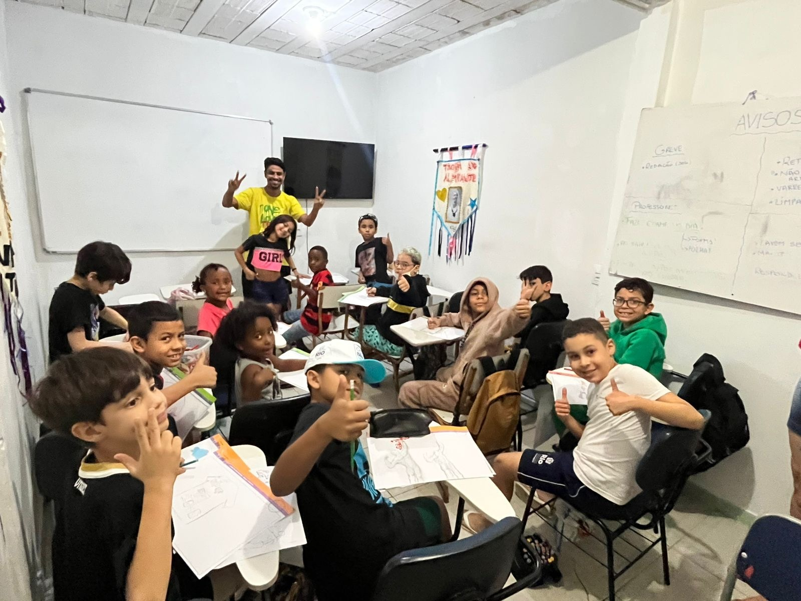

Relatórios e documentos referentes ao ciclo de 2025 do Instituto de Direitos Humanos AME.
O Projeto Pré-ENEM AME Elas, do Instituto AME o Santo Amaro, é uma iniciativa de educação popular voltada à preparação para o ENEM de jovens e adultos em situação de vulnerabilidade no Morro Santo Amaro (RJ), com público majoritariamente feminino.
No ciclo de 2025, o projeto apresentou alta qualidade pedagógica e forte vínculo territorial, mas enfrentou instabilidade na permanência de alunos e professores devido à irregularidade financeira.
A partir de 2026, o projeto passa a contar com fomento de R$ 163.200,00, proveniente do Edital CPOP nº 05/2025, iniciativa do Ministério da Educação, garantindo maior estabilidade operacional.
Esse apoio fortalece o modelo do projeto, assegurando bolsas para estudantes e docentes, elemento central para permanência, frequência e aprendizagem.
Ressalta-se ainda que parte do recurso também foi destinada ao Polo Educacional do Instituto, que atende aproximadamente 60 crianças, viabilizando a remuneração dos professores responsáveis pelas atividades formativas, ampliando o impacto social da iniciativa para além do eixo do Pré-ENEM.
Relatório de prestação de contas do ciclo 2025 do Projeto Pré-ENEM AME Elas.
Acessar →



Razão social: Instituto de Direitos Humanos AME
CNPJ: 63.244.705/0001-74
Endereço: Rua Santo Amaro, nº 349, Glória, Rio de Janeiro/RJ — Brasil
E-mail institucional: institutodedireitoshumanosame@gmail.com
Administrador responsável: Lucas da Silva Alves Pessoa — CRA-RJ 20-105400
Todos os nossos dados de impacto têm origem no Observatório do Santo Amaro, nosso núcleo de pesquisa. Você pode consultar as sistematizações e metodologias usadas.
Conheça o Observatório →Estamos à disposição para esclarecer qualquer ponto sobre o uso dos recursos e a gestão do Instituto.
Fale com a gente